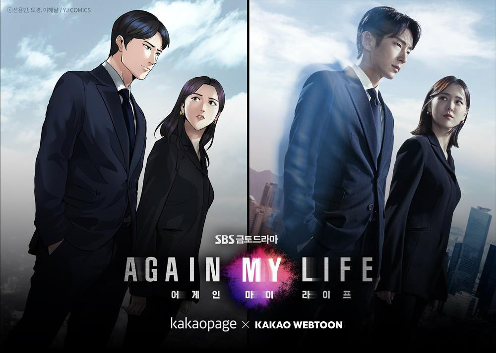
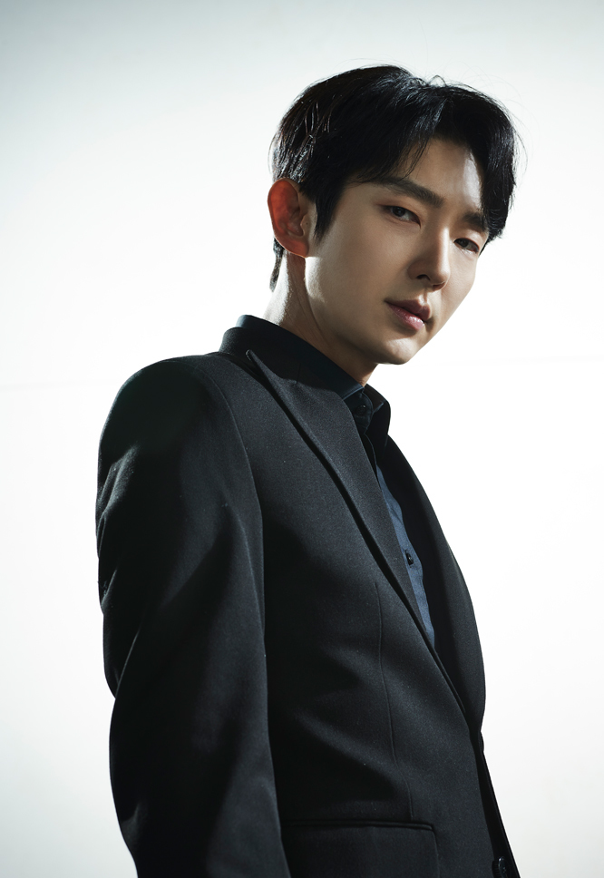
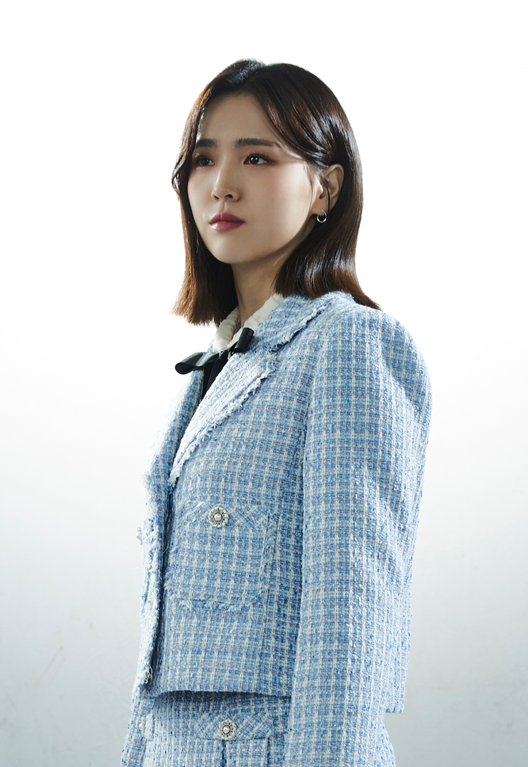
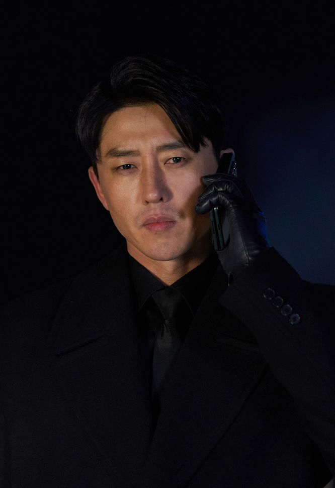
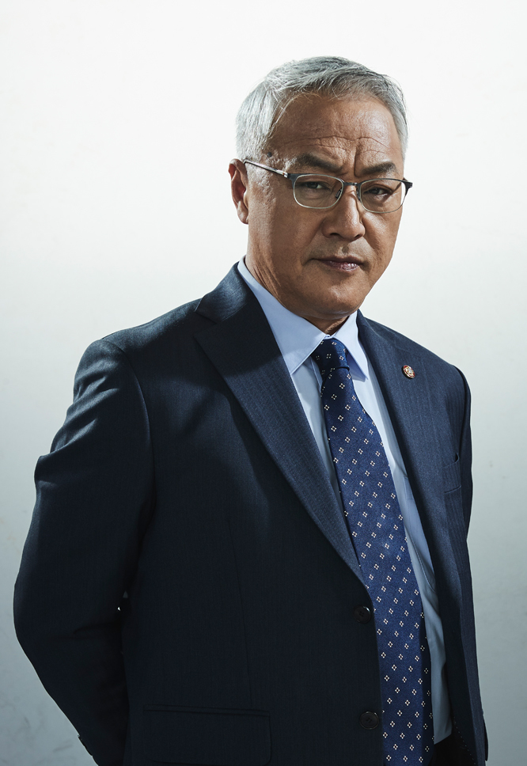
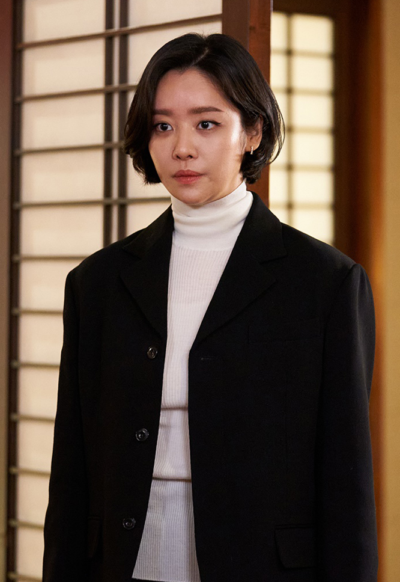

드라마에서 웹소설로,
웹소설에서 드라마로...

관전 포인트
휴머니스트 김희우

원작에서는 목적에 매몰되어서 사실상 냉혈한이나 다름이 없다. 그렇다보니 소설속 김희우에게는 이렇다 할 로맨스가 없어서 히로인이 5명이나 되지만 달달한 로맨스는 쉽게 연출 되지 않는다. 또한 사람에게 믿음이 부족해 소설 속에서는 박상만이 히로인이라 할 정도로 그를 제외한 누구도 믿지 않는다. 때문에 항상 안전 장치를 마련하고는 했다.그러나 드라마에서는 휴머니스트 적인 요소를 집어 넣어서 얼핏 보면 소설 속 인물과는 조금 다르게 쉬워보이는 측면을 보이고는 한다.
비중이 강화된 김희아

원작에서는 천하그룹의 계승서열에서는 꽤나 먼 캐릭터였다. 그저 천하그룹 김건영 회장의 이쁜이 막둥이 딸 정도 였을뿐, 사실상 비중이 그렇게 큰 편도 아니었다. 하지만 드라마에서는 계승서열도 높고 김건영 회장이 은근히 후계자로 미는 캐릭터로 나온다. 아마도 소설에서 김희우와 결혼하는 것으로 결론이 나와 그 덕에 드라마에서는 히로인 전용 보정이 된 것으로 보인다. 때문에 불필요한 장면이 조금 첨가 되었다. 메인 히로인의 개연성을 위해 다른 히로인인 규리, 한미의 비중이 줄었다.
닥터k의 선택

소설에서 희우는 그를 무력으로 제압하지 못한다. 다만 차로 그를 제압했다. 웹툰에서는 닥터k의 변심으로 인해 조태섭을 체포할 수 있었다. 결국에는 그를 무력적으로 제압하지는 못한 걸로 보인다. 과연 드라마에서는 닥터k가 어떤 선택을 하는 지가 중요한 포인트가 될 것이다. 그의 선택에 따라서 드라마의 긴장감이 달라지기 때문이다. 하지만 한지현과의 서사가 연결된 것으로 보아 제일 유력한 가설은 한지현을 보호하기 위해, 혹은 그녀의 복수를 위해 변절 할 것으로 보인다.
조태섭의 파멸

원작에서는 조태섭이 자살을 한 것 처럼 꾸미고 중국으로 도주했다가 살해 당한 것으로 나온다. 중국에서 다시 되돌아 오려다가 희우의 술수로 그곳에서 신비해진 것으로 풀이 된다. 웹툰 같은 경우 결국에는 체포되어 법의 심판을 받아 징역을 살다가 자살당하는 엔딩을 맞이한다. 각각의 결말이 미묘하게 다르기에 드라마 같은 경우는 어떤 형식의 파멸을 맞이할지 시청자 입장에서 즐길 포인트가 될 것이다. 다만 이 두가지 엔딩 다 공중파에서 쓰기엔 주인공의 타락이 보여서 조금은 다른 엔딩으로 갈 것으로 추측된다.
한지현의 결말

원작에서는 희우가 닥터k(검은양복)를 차로 치어 구해낸다. 하지만 웹툰에서는 결국에 닥터k 손에 사망한다. 현재 드라마 상으로는 한지현과 닥터k사이에 원작이나 웹툰과는 다른 서사가 부여 된 것으로 보인다. 그 서사의 원인으로 결말이 웹툰과 같을지 원작과 비슷할지 아니면 새로운 제3의 결론이 나올지를 지켜 볼 일이다.